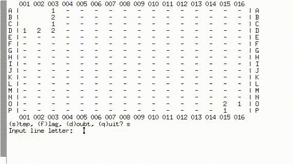

Índice

Figura 1: Glenda, mascote do Plan 9, em seu traje espacial para navegar na web.
Introdução
Olá. Neste post, pretendo explorar os aspectos e as dificuldades que obtive ao programar um pequeno jogo na linguagem C; todavia, este post diz pouco respeito à linguagem e ao projeto em si, sendo realmente focado no sistema operacional para o qual decidi desenvolvê-lo.
Minha amiga, a Sarah Orlando, adotou para si o desafio da criação de um clone do Campo Minado (Minesweeper) na linguagem C++, ainda que com foco em estruturas mais básicas, o que dispensaria o uso de STL ou orientação a objetos. Inspirado na decisão dela, resolvi adotar o mesmo projeto para o fim-de-semana.
Mas afinal, por que facilitar se podemos complicar, não é mesmo? Como já programo em C e em C++ há um bom tempo, resolvi tentar fazer algo inusitado. Já fazia um tempo que eu queria desenvolver alguma aplicação simples em C para um outro sistema operacional: o Plan 9. Se eu pudesse unir o útil ao agradável, teria um joguinho simples, que requereria nada mais, nada menos que um console para impressão da sua interface.
Este post visa explorar minhas dificuldades e aprendizados que adquiri ao realizar este projeto. Por não se tratar de algo usual, até mesmo a forma como o código em C é escrito passa a ser diferente – mas falarei mais disso adiante.
Já agradeço antecipadamente ao Ricardo Lanziano (arpunk) por ter apontado muitas direções para mim via Telegram, e também por ter me ensinado muita coisa interessante sobre o SO. Também agradeço à Sarah Orlando por ter sido a verdadeira pioneira com este projeto.
O que é Plan 9?
Figura 2: Screenshot do sistema em operação.
Plan 9 From Bell Labs é um sistema operacional, fruto de pesquisa do mesmo grupo que criou o sistema operacional UNIX1 e a linguagem C. O sistema emergiu no final dos anos 80, e pode ser visto como uma tentativa de evoluir os conceitos do UNIX, em uma era onde gráficos e rede passaram a ser utilizados mais ostensivamente.
Ainda que tivesse a promessa de modernização do UNIX, o Plan 9 foi originalmente desenvolvido em uma época onde a internet como conhecemos (com browsers e outras ferramentas, hoje utilizadas frequentemente no nosso dia-a-dia) ainda não era uma realidade. Portanto, o sistema não possui um browser capaz de atender às demandas modernas. Alguns forks do sistema (como o 9front, descrito nas próximas seções) possuem alguns browsers mais "recentes", porém sem a premissa de habilitar suporte completo à web contemporânea.
O sistema é descrito por seus criadores2 como um "argumento" em prol de simplicidade e claridade, sendo um UNIX levado ao extremo. Dentre suas características marcantes, pode-se citar o Plan 9 como um sistema para a criação e o gerenciamento de um ambiente de computação distribuída, onde máquinas separadas atuam como terminais, ou servidores de CPU, e até mesmo servidores de arquivos. Desta forma, as máquinas conectadas funcionam como um cluster, e compartilham diversos recursos entre si.
Plan 9 From Bell Labs é, infelizmente, um sistema já abandonado pelos desenvolvedores originais. Suas reminescências são, hoje, muito bem-mantidas por uma comunidade de fãs em um conjunto de forks que, surpreendentemente, são hoje objetos de pesquisa para resolução de problemas modernos, sobretudo no que tange a design de sistemas operacionais.
Forks do Plan 9
O Plan 9 ainda possui alguns forks (ou distribuições) notórios em funcionamento. Como exemplo, temos:
- 9legacy, que visa manter o sistema "original", e apenas aceitar patches de compatibilidade;
- 9atom, que visa adicionar algumas arquiteturas extras para o kernel e suporte extra para hardware e alguns sistemas de arquivos;
- 9front, o fork utilizado para os testes do projeto descrito neste artigo, que visa aceitar patches ostensivos e abarcar uma comunidade de fãs, sendo o fork mais funcional para computadores modernos;
- Inferno, um sistema da empresa Vita Nuova, mantido como software livre, afim de promover uma linguagem de programação específica, para tentar simplificar e manter a segurança de aplicações: a linguagem Limbo;
- Harvey, um sistema operacional de 64-bit que visa trazer o Plan 9 para um
universo que se adeque aos padrões ANSI e POSIX, e pode ser compilado
utilizando compiladores modernos, como
gccouclang3; - Jehanne, um fork feito sob a premissa de dar continuidade ao princípio de simplicidade do Plan 9, e também de simplicidade no design de sistemas operacionais modernos. Distribuído como software livre, possui bastante atividade em seu blog, trazendo discussões interessantes para entusiastas de desenvolvimento de sistemas.
Plan 9 possui outros forks, mas estes são, provavelmente, os mais relevantes da atualidade.
Uso e escolha do 9front
Neste projeto, como apontado anteriormente, utilizei o 9front para testes,
porque também tenho-o instalado em uma partição extra na minha máquina. A beleza
de ter este tipo de sistema instalado é perceber a facilidade na localização de
recursos do mesmo. Por ser algo tão "oldschool", encontrar material a respeito
do seu uso e do seu funcionamento envolve ler os diversos artigos no diretório
/sys/doc (todos os artigos distribuídos em PostScript, podendo ser compilados
"na hora" e vistos no visualizador de documentos4). Para outras situações,
basta utilizar as páginas de manual, as famosas manpages, que funcionam da exata
mesma forma como no Linux5.
Adicionalmente, preciso ressaltar o quão interessante é a filosofia do sistema. Os compiladores são modulares e auto-contidos o suficiente, a ponto de tornar cross-compiling para diversas arquiteturas uma operação completamente trivial. Ou seja, se seu sistema estiver sendo executado para arquitetura x86, mas sua arquitetura for x8664, você poderá recompilar o Plan 9 por completo (kernel + userland) em menos de cinco minutos. Compare este tempo ao tempo de compilação do kernel Linux, ainda que compilado com o mínimo de features possível. Mesmo assim, Plan 9 será compilado muito mais rapidamente, e isto proverá, imediatamente, um sistema completo e pronto para o funcionamento.
Ferramentas de desenvolvimento
Desenvolvimento no Linux
A maior parte do desenvolvimento foi feita em meu sistema Void Linux x8664, sob o editor de texto Emacs; afinal, ninguém precisa de algum editor de texto especial para escrever código algum. Sinto-me confortável utilizando o Emacs para desenvolvimento, então fiquei seguro ao utilizá-lo.
Alguns dos testes foram feitos utilizando uma ferramenta chamada plan9port, que
faz funcionar algumas (não todas) as ferramentas do Plan 9 no Linux. Em
especial, o que utilizei foi o compilador 9c e o linker 9l (que na realidade são
wrappers para compiladores próprios para Linux), e o terminal 9term por motivos
estéticos.
Para scripts de compilação, utilizei a ferramenta mk do plan9port inicialmente,
mas logo reverti para o make, quando precisei adaptar o sistema de build
utilizando o mk para o Plan 9 de verdade. Maiores diferenças serão destacadas
adiante.
Desenvolvimento no 9front
Tenho o 9front instalado tanto de forma nativa quanto em um drive virtual,
bootável via QEMU dentro do Void Linux6. Após o final do desenvolvimento
usando plan9port no Linux, bastou trazer o código para o QEMU e, em seguida,
para o 9front nativo, e o projeto funcionou com mudanças mínimas que não
afetaram o build para Linux com plan9port. O restante do trabalho baseou-se
apenas em adequar o arquivo mkfile para que funcionasse no 9front (mais sobre
este arquivo será dito a seguir).
Estrutura do projeto
Neste momento, destacarei alguns pontos com relação aos arquivos de projeto criados, e também da organização em termos de hierarquia e uso dos mesmos.

Figura 3: O jogo em funcionamento, no Linux, sob o plan9port.
Arquivos
O projeto possui apenas três arquivos relevantes:
9mine.cmkfileMakefile
Onde 9mine.c é o arquivo de código em C, mkfile é o arquivo de configuração e
build para Plan 9, e Makefile é o arquivo de build para o Linux.
Método de compilação
Para compilar o projeto, foram utilizados tanto make (Linux/plan9port) quanto
mk (Plan 9).
make
Inicialmente, meu objetivo era utilizar apenas ferramentas do plan9port no
Linux, de forma a emular completamente um ambiente de compilação para o
Plan 9. Acontece que o plan9port não visa permitir exatamente isto. Algumas das
utilidades da compilação do Plan 9, como a escrita de um script de compilação
que seja agnóstico em termos de arquitetura do processador, não foram portadas
para o Linux, pelo motivo óbvio de elas serem habilitadas por dependências
intrínsecas ao sistema, que logo mais descreverei.
Como o processo de compilação no Linux envolvia um sistema de prototipagem
rápida, e não demandava preocupação com arquitetura do processador, ou mesmo com
processo de instalação no sistema, optei por utilizar a ferramenta de scripting
para build padrão do Linux, o programa make.
mk
Esta é a ferramenta padrão para facilitação de builds no Plan 9, e também é
ostensivamente utilizada na manutenção de arquivos e na hierarquia do
sistema7. Segundo a documentação oficial, mk foi criado para interagir
diretamente com o shell oficial do Plan 9, o rc, possibilitando a execução de
tarefas como manutenção, e até mesmo execução de ações em paralelo, ao explorar
um ambiente com múltiplos processadores, o que é respaldado pela ideia de um
sistema distribuído e com acesso a dispositivos em máquinas remotas.
Utilizo esta aplicação no projeto para possibilitar o suporte e a distribuição do software para qualquer fork do Plan 9. Através dele, é possível tanto compilar quanto instalar o jogo aqui discutido.
Controle de versão e manutenção de patches do sistema
Na realidade, nenhum fork do Plan 9 possui um bom sistema de controle de
versão. Há um script comunitário que funciona de forma similar ao git mas que,
primariamente, não passa de um wrapper para o hget (similar ao wget)8.
Existe uma ferramenta comunitária de suporte para Mercurial, também lá chamada
de hg, mas que não utilizei, por não ter usado Mercurial para controle de
versão. Há rumores de que esta ferramenta "dá para o gasto", mas é insuficiente
em muitos requisitos. Todavia, é a ferramenta primária relacionada a updates do
sistema no 9front.
Ainda que esta descrição de sistemas de controle de versão para Plan 9 pareça absurda, lembre-se de que este é um sistema que predata a internet como a conhecemos, e com uma base de fãs que preferem o jeito "oldschool". Sendo assim, seria mais comum falar em patches na forma de diffs, vindos por e-mail, e que são incorporados aos arquivos utilizando uma ferramenta para tal. Um projeto de integração de controle de versão com o Plan 9 provavelmente valeria-se da ferramenta utilizada para isto. Portanto, fica bem claro que software de controle de versão no Plan 9 deveria ser preferencialmente não-monolítico.
Caso você esteja curioso com relação à forma como o sistema é, normalmente,
"atualizado", o procedimento passa pela montagem de um diretório remoto,
conectado aos servidores dos mantenedores do fork utilizado, através do
protocolo 9p, que também é uma das características-estrela do Plan 9, na qual,
infelizmente, não vou me aprofundar aqui9.
Diferenças cruciais ao programar
O sistema é radicalmente diferente na forma como sugere a interação do programador com a biblioteca-padrão de C. Nesta seção, mostrarei alguns programas básicos com algumas features que julguei serem relevantes.
Anatomia básica de um programa em C
Como antes dito, um programa básico em C para o Plan 9 pode ser dramaticamente diferente do que vemos hoje para Windows, Linux e OS X. Abaixo, temos um "Hello, world!" bem simples.
#include <u.h> #include <libc.h> void main(void) { print("Hello, world!\n"); exits(0); }
Leitores acostumados com ANSI C poderão assustar um pouco com o exemplo. Como
pode ser visto, apesar de estarmos imprimindo algo na tela, não há sequer uma
sombra remota de stdio.h ou de printf, pois estas são funções que não existem no
Plan 910. Mas engana-se quem acha que não são suficientes: ao invés da
implementação de um padrão enorme, o foco está em deixar as coisas o mais
simples possível para o programador.
Os cabeçalhos u.h e libc.h são cabeçalhos padrões no Plan 9, e já englobam uma
quantidade enorme de coisas específicas. Deve-se incluir estes cabeçalhos nesta
exata ordem para evitar problemas de linking.
A função print(3)11 funciona da exata mesma maneira que printf, porém com
algumas diferenças: Plan 9 suporta unicode out-of-the-box, então há flags para o
tipo Rune, por exemplo, que simboliza um caractere UTF-8.
exits(3)12 é a função comum para encerramento de um processo qualquer,
recebendo, como parâmetro, uma constante de caracteres (de tamanho máximo
ERRLEN), especificando brevemente o motivo para a saída do processo. Veja,
porém, que, ao contrário de sistemas Unix-like convencionais, a função de ponto
de entrada (main) não possui valor de retorno. Portanto, o uso de exits(3) é
opcional, no caso apresentado. Também, passar um ponteiro nulo para esta
função (no caso, o valor 0 ou o macro nil) indica que o processo foi terminado
normalmente.
Entrada via console
Plan 9 não possui um equivalente direto a scanf(3)13. Ao invés disso,
entrada a partir do console é uma atividade delegada à biblioteca
libbio. Enquanto isto parece algo não-usual, é uma prática que compactua com a
filosofia do sistema, que envolve levar a filosofia UNIX ao extremo: se tudo é
um arquivo, e arquivos são lidos como streams, então a entrada do console também
poderá ser tratada como um stream14.
Ademais, libbio trata entrada e saída para arquivos no formato de um buffer,
alocado na estrutura Biobuf. Basta abrir o buffer para leitura com stdin:
#include <u.h> #include <libc.h> #include <bio.h> /* Cabeçalho da libbio */ /* No ponto de entrada da aplicação */ void main(void) { /* Estrutura do buffer */ Biobuf bstdin; /* Abertura do buffer. O argumento '0' indica stdin */ if(Binit(&bstdin, 0, OREAD) == Beof) { fprint(2, "Erro ao conectar stdin a bio: %r"); exits("Binit"); } /* Lendo uma linha a partir de stdin */ char *str; int len; str = Brdline(&bstdin, 10); /* 10 = \n */ len = Blinelen(&bstdin); /* remove o caractere de fim-de-linha na string */ if(str) { str[--len] = '\0'; } print("Lida a frase \"%s\" de tamanho %d\n", str, len); /* Fechamento do buffer */ Bterm(&bstdin); exits(0); }
Parsing de argumentos de linha de comando
Normalmente, quando escrevemos uma aplicação em C/C++, sabemos que podemos
utilizar argc e argv, passáveis como parâmetro para main, para recuperar os
argumentos passados via console para nossa aplicação. No Plan 9, isto não é
diferente.
Como meu jogo tinha um modo debug, eu precisava de uma flag -d que pudesse ser
passada via console. Assim, minha primeira aproximação para este problema foi a
forma mais ingênua:
void main(int argc, char **argv) { int i; int debug = 0; for(i = 1; i < argc; i++) { if(!strcmp(argv[i], "-d")) { debug = 1; break; } } if(debug) { print("Got a debug flag!\n"); } exits(0); }
Todavia, o Plan 9 já tem algo para te ajudar com isso, na forma de macros! Como muito bem apontado pelo Ricardo Lanziano, existe uma forma muito mais simples de lidar com este problema. Deixo a interpretação para o leitor:
void main(int argc, char **argv) { int debug = 0; ARGBEGIN { case 'd': debug = 1; break; } ARGEND; if(debug) { print("Got a debug flag!\n"); } exits(0); }
Processo de compilação
Figura 4: 9front sob o QEMU, executando o projeto 9mine no console.
O processo de compilação no Linux é straightforward: Provido que você tenha o
plan9port instalado e configurado, digitar make no diretório src/ do projeto
compilará a aplicação. Não foi incluído nenhum target de instalação, uma vez que
o objetivo primário é dar atenção ao Plan 9.
No 9front, provido que você já tenha o diretório do projeto clonado em sua
máquina (vide a seção de controle de versão), basta ir ao diretório src/ e
digitar mk para gerar o binário. Em seguida, digitar mk install instalará o
binário sob o diretório /bin/games da sua arquitetura. O jogo, em si, será
invocável no console, com o comando games/9mine15.
O arquivo mkfile
O arquivo mkfile não é particularmente complicado ou muito diferente de um
arquivo Makefile como conhecemos; porém, seu design foi feito sob uma premissa
de maior integração com o sistema operacional, o que ocasiona alguns pequenos
truques pré-preparados e muito interessantes16.
Abaixo, coloco uma cópia direta do arquivo mkfile do 9mine, cuja ação
descreverei a seguir.
</$objtype/mkfile BIN=/$objtype/bin/games 9mine: 9mine.$O $LD -o $target $prereq install: 9mine mv 9mine $BIN %.$O: %.c $CC $CFLAGS $stem.c
Este script é necessariamente independente de arquitetura, porque "herda" o
conteúdo do arquivo /$objtype/mkfile, que é suprido pelo sistema. $objtype é uma
variável de ambiente que especifica a arquitetura nativa para a qual pretende-se
compilar a aplicação. Como o sistema estava sendo executado para uma arquitetura
386, o simples ato de invocar mk no diretório cria um arquivo 9mine.8, similar a
um arquivo .o no Linux. Este arquivo, então, será linkado e transformado no
binário de nome 9mine.
O interessante deste método é que, como ele depende de uma variável de ambiente, o mero ato de modificá-la já habilita suporte a compilação cross-platform. Plan 9 tem compiladores de C extremamente compactos e que funcionam para diversas arquiteturas, o que torna esta uma operação fácil17.
Por exemplo, suponhamos que estamos compilando uma aplicação em C para ser executada em um Raspberry Pi 2 ou 3. A arquitetura destes dispositivos é ARM; além disso, é possível compilar o sistema Plan 9 para ARM18. Dito isto, a partir do seu computador pessoal de qualquer arquitetura, que esteja executando o Plan 9, é possível produzir um binário compatível com a arquitetura ARM, utilizando o seguinte comando:
objtype=arm mk
Isto fará override da variável $objtype para o próximo comando, que é mk, e
utilizará variáveis e compiladores apropriados para a arquitetura-alvo. Sendo
assim, o script criará um objeto sob o nome 9mine.5, onde o número após o ponto
diz respeito à arquitetura-alvo19.
Conclusão
Certa vez, um contato me disse que seria interessante, ao longo da minha vida, absorver conhecimento sobre diversos sistemas UNIX-like, sempre procurando saber mais sobre eles, para que não houvesse surpresa ao migrar de um sistema para outro. Ainda que o Plan 9 não possua uso expressivo na indústria20, fica evidente a preocupação com arquitetura e clareza no desenvolvimento deste sistema operacional, o que vejo como um exemplo valioso para mim.
Acredito que o Plan 9 possua seus usos, mesmo em um ambiente moderno. Nesta nova onda de uma internet onde operações parecem independer de servidores centralizados, um sistema operacional de trinta anos atrás parece apontar por veredas de bom uso e viabilidade.
Ademais, o código e a arquitetura do Plan 9 são sinônimos de excelência. O sistema visa buscar e evangelizar código legível, escrito em C, sob boas práticas estritas e sob a Filosofia UNIX, mostrando que desenvolvimento de software não precisa ser esta "bagunça" que vivemos atualmente. A fórmula para isto, claro, envolve não apenas estudo, mas também apresentação de exemplos, da mesma forma como o Plan 9 From Bell Labs procurou ser.
Notas de Rodapé:
O sistema operacional UNIX foi um sistema originalmente projetado como uma plataforma conveniente para programadores, de forma a facilitar o desenvolvimento de software. A arquitetura baseia-se na famosa filosofia homônima, de onde surgiram máximas como "tudo é um arquivo" ou "faça programas que façam uma única coisa, e que façam-na apropriadamente". A extrema modularidade e simplicidade revelou-se conveniente em termos de projeto e arquitetura de sistemas operacionais, apadrinhando sistemas modernos em sua arquitetura (os famosos sistemas UNIX-like, como Linux, BSD ou OS X).
Mais informações sobre os objetivos do Plan 9 podem ser vistas na página
de manual apropriada de introdução, em intro(1).
Se você estiver procurando um bom projeto de software livre para contribuir ou estudar o código, recomendo dar uma olhada no Harvey. Você pode acessar o código-fonte aqui.
Esta é uma feature interessante que acredito poder elaborar. Os artigos
encontram-se, em maioria, em arquivos com a extensão .ps. É necessário navegar
até o diretório /sys/doc no terminal, e então listar os arquivos no
diretório. Logo após, basta marcar o nome do arquivo utilizando o mouse, dar um
clique com o botão do meio, e então selecionar plumb; imediatamente, o programa
page será aberto, com o artigo em questão no formato renderizado. Isto é
interessante, pois não funciona apenas para arquivos PostScript; quaisquer
arquivos poderiam ser abertos em seus programas adequados, talvez até mesmo
compilados automaticamente, utilizando apenas esta feature.
Não posso negar, estas não foram minhas únicas fontes de informação. Anteriormente, citei que o Ricardo Lanziano me ajudou em muitas coisas com relação ao funcionamento e à operação do sistema, mas também foi de grande ajuda a leitura da seção de Frequently Questioned Answers do 9front. Nota: esta página leva a sério o ato de ser humorística e politicamente incorreta, mas não deixa de conter informação útil.
Caso o leitor queira realizar uma instalação do 9front no QEMU como fiz, poderá consultar a página de dúvidas do 9front, que possui instruções explícitas de como fazê-lo. Nesta mesma seção, também há instruções para instalação do 9front em hardware "real".
Para saber mais a respeito desta ferramenta, recomendo ler
o artigo do mk, que já vem incluso no diretório /sys/doc do sistema.
Acredito que não seja muito adequado colocar isto aqui como nota de
rodapé, mas, na falta de um lugar mais adequado, deixarei aqui para futura
consulta. O método de instalação envolve montar localmente a máquina remota dos
servidores do 9front, e então copiar o script de git localmente. Isto envolve
dois comandos: 9fs 9front; cp /n/extra/rc/git $home/bin/rc/.
As instruções completas de como compilar o 9front a partir do
código-fonte encontram-se aqui. Caso você queira saber mais sobre o 9p (ou o
9fs), encontrará informações relevantes neste paper, que visa endereçar a
organização das redes no Plan 9.
Na realidade, o Plan 9 possui, sim, implementações para estas funções mais triviais, mas elas não são normalmente utilizadas no design original do sistema, e também não são preferidas pelos desenvolvedores ativos do mesmo. Sendo assim, optei por manter o uso da linguagem C no Plan 9 de forma "pura", ao invés de forçar a compatibilidade entre o Plan 9 e outros sistemas.
Veja print(2) nos manuais online do 9front.
Veja exits(2) nos manuais online do 9front.
Veja scanf(3) nos manuais online do Linux.
Caso você desconheça o conceito de streams do UNIX, poderá achar o artigo do Dennis Ritchie sobre streams aqui.
Note a mudança evidente na forma como binários se comportam no Plan 9. O
fato de um binário chamado 9mine estar em um subdiretório de bin significa que
este continuará sendo invocável, mediante a informação de em qual subdiretório
ele se encontra. Isto evidencia o uso de namespaces para hierarquia de arquivos
no sistema. Para mais informações, recomendo consultar este maravilhoso paper
dos desenvolvedores originais do sistema, que explicita a forma como a
hierarquia dos namespaces funciona, bem como seus usos.
Recomendo, também, a leitura do artigo Plan 9 Mkfiles, igualmente
incluído no sistema, que possui um material completo para uso de mkfile.
Para uma explicação completa das arquiteturas suportadas pelos compiladores do Plan 9, veja a manpage relacionada.
As instruções de compilação do 9front para Raspberry Pi estão aqui.
Uma descrição mais aprofundada dos compiladores de C do Plan 9 pode ser vista neste artigo, e descrições aprofundadas do uso destes compiladores podem ser vistas neste outro artigo.
Bom… não é bem assim, não é? Recentemente, a Microsoft realizou um
patch que adiciona a funcionalidade de abrir o Windows Explorer em um subsistema
Linux que esteja rodando no Windows 10. A magia toda ocorre sob a utilização de
um servidor de arquivos local, que utiliza o protocolo 9p, nativo do Plan 9,
para comunicação entre a máquina "real" e o subsistema. Aparentemente, boas
ideias não morrem.